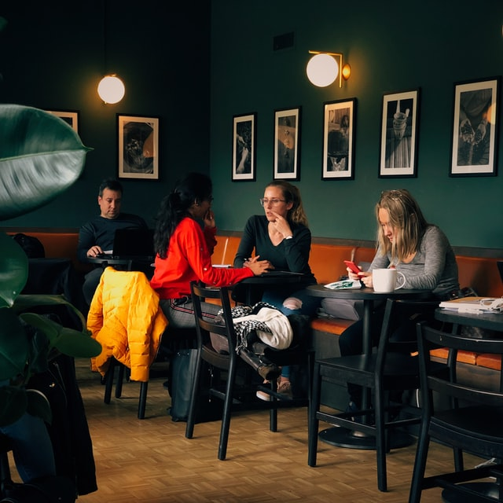

Logo
Ресторан оформлен в классическом стиле. Лаконичный и сдержанный
интерьер элегантно дополнен декоративными элементами. В теплое
время года гости могут расположиться на просторной летней
террасе, с которой открывается живописный вид на исторический
центр города. Здесь действует специальное террасное меню от
шеф-повара.Читайте подробнее в источнике.
Ресторан вобрал в себя лучшие традиции европейской, испанской и средиземноморской кухни. Уютная, доброжелательная атмосфера и достойный сервис
- это основные преимущества ресторана. Все вышеперечисленное и плюс доступный уровень цен позволили заведению оказаться в списке лучших ресторанов Минска.
Секрет популярности прост - побывав здесь однажды и ощутив радушие и гостеприимство,
теплый прием и заботливое обслуживание, гости непременно возвращаются вновь и рекомендуют своим друзьям.
firstrest@gmail.com
+375 (44) 434-22-23